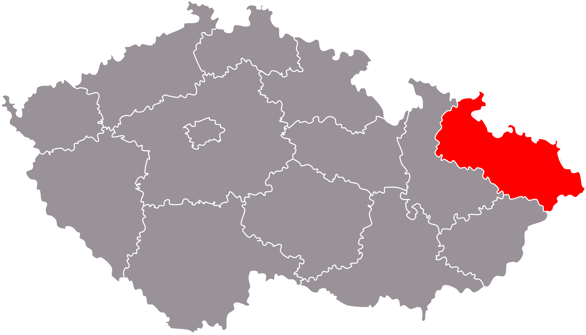
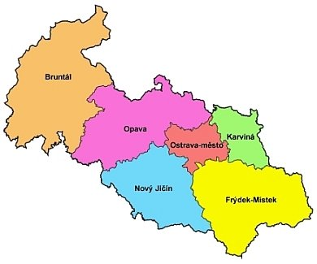

5 430, 54 km^2
1 192 834 obyvatel
219, 7 ob / km^2
Nejvýchodnější bod ČR: Bukovec (49°33′1″ s. š., 18°51′32″ v. d.)
 Česká vysočina
Krkonošsko-jesenická subprovincie
Jesenická oblast
Hrubý Jeseník
Nízký jeseník
Zlatohorská vrchovina
Hanušovická vrchovina
Středoevropská nížina
Středopolské nížiny
Slezská nížina
Opavská pahorkatina
Západní Karpaty
Vněkarpatské sníženiny
Západní vněkarpatské sníženiny
Moravská brána
Ostravská pánev
Vnější západní karpaty
Západní Beskydy
Hostýnsko-vsetínská-hornatina
Moravskoslezské Beskydy
Jablunkovská brázda
Jablunkovské mezihoří
Slezské Beskydy
Západobeskydské podhůří
Podbeskydská pahorkatina
Řeky:
Odra -> Baltské moře
Morava -> Černé moře
Vodní nádrže:
Slezská Harta
Šance
Kružberská přehrada (voda pro Ostravu)
ŽV: skot(86 747), prasata(37 905), ovce(16 481), drůběž(945 422)
RV: brambory, len, oves
Nezaměstnanost 4,44% (Nejvyšší v ČR - 2019 - bývalí zaměstnanci utlumovaného těžebního a těžkého průmyslu)
Těžební: Černé uhlí (Důl ČSM - jižně od Karvinné - OKD)(útlum)
Hutnický: Ocel – Nová huť (Ostrava) a Třinecké železárny (Třinec + válcovna v Ostravě)
Strojírenský – Tatra (Kopřivnice), Hyundai (Nošovice u Frýdku-Místku), Škoda vagonka (Ostrava)
Potravinářský – Kofola (Krnov), Mlékárna Kunín (Ostrava, Martinov), Radegast (Frýdek-Místek)
CHKO: CHKO Jeseníky, CHKO Beskydy, CHKO Poodří
Dolní oblast Vítkovice, Důl Michal v Ostravě, Piaristický klášter a zahrada v Příboře, Katedrála Božského Spasitele v Ostravě, Raduň (zámek), Hradec nad Moravicí